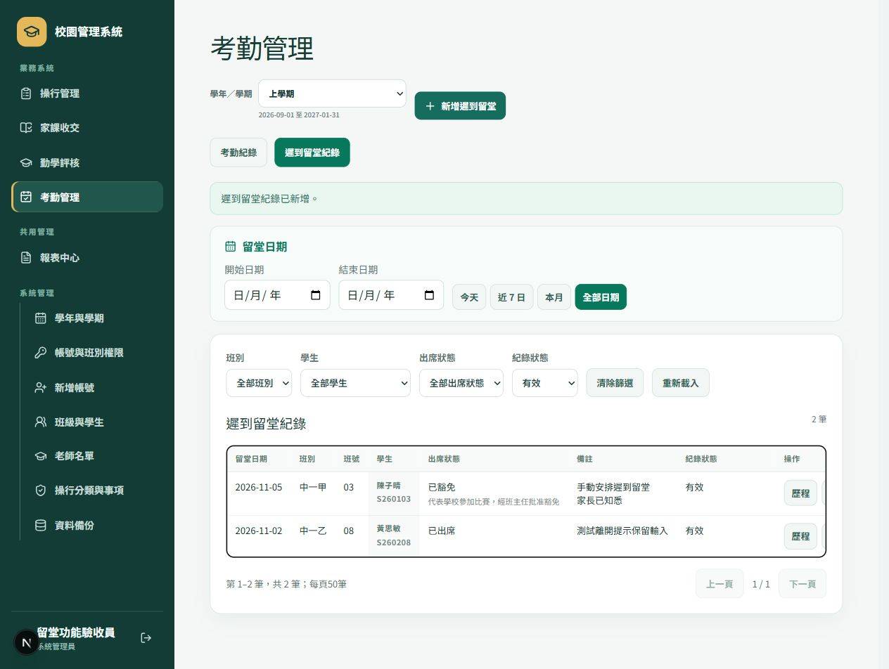

手動新增
- 選擇班別，按「新增學生」。
- 填寫學生姓名、學生編號、班號及選填的英文姓名。
- 核對資料後儲存；如有重複或格式錯誤，保留輸入並按提示更正。
操作指南操行・家課・勤學・考勤
先核對學年、學期及班別，再依需要登記。這份指南整理目前的主要流程，亦說明儲存、豁免、改期和版本衝突時應如何處理。
更新：2026年11月2日（香港）
介面圖只使用虛構驗收資料
GET STARTED
使用已安裝的桌面版，或由技術同事啟動原始碼版本。首次設定只需進行一次。
原始碼版本需 Node.js 22.13 或以上。在專案資料夾執行 npm ci，再執行 npm run dev；Windows 亦可使用 Start-Local.ps1。按啟動時顯示的本機網址開啟系統。
首次設定填寫顯示名稱、帳號及密碼。只有勾選「加入虛構示範班級、學生與紀錄」才會加入示範資料；測試環境可使用此選項。
使用管理員提供的帳號及密碼，毋須填寫電郵地址。密碼長度為10至200字元；管理員可在「新增帳號」建立老師帳號，再分配班別權限。
CHOOSE THE SCOPE
在「系統管理 → 學年與學期」建立學年，填妥上下學期的開始及結束日期。日期不可倒置或重疊；考勤的上午、下午回校時間亦在這裏設定。
選擇學年及上／下學期後進入業務頁。每次登記前核對頁首的學期及日期範圍；老師只會看到獲授班別權限的學年。
有修改時，系統會提示「儲存並繼續」、「放棄修改」或「取消」。同一登入期間重新整理會保留學期選擇；登出後須重新選擇。
班級、名冊及老師安排按學年保存，上下學期共用。新學年需要另行設定，不會自動升班。既有紀錄保存原有學期，修改學期日期不會把紀錄搬到另一學期。
CLASSES & STUDENTS
由「系統管理 → 班級與學生」進入。管理員可在「更多工具」建立班別；有班別編輯權限的老師可新增學生或匯入 CSV。
03、3 及 ００３ 視為同一班號。CONDUCT & AWARDS
按「登記訓導紀錄」，以班別選取一名或多名學生；可跨班及跨頁選取，儲存前逐一核對身份。
核對勤到、勤學或守規範疇、校本事項 Code、日期及內容。分數可使用正數、負數、0或小數；大過／小過須為負分，大功／小功須為正分。
新紀錄直接結案並計入所屬學期。各學期的守規、勤學及勤到分分別由80、80及100分起算；「操行分數」可查閱結果。
列表的「修改分數」可更正手動紀錄的實際加減分數；原學生、事項、日期及內容保留。按「刪除」前先核對目標，再確認。家課同步紀錄由家課流程處理。
大過／小過可設定或取消豁免，須記錄原因。原扣分、豁免狀態、處理人及時間會保留於歷程；已豁免的記過不計分。大功／小功不設豁免。
HOMEWORK
在「家課收交 → 收交登記」按「新增家課」。先填科目、名稱及說明，再勾選一個或多個可編輯班別。所選班別由空白開始，核對後才建立。
選擇班別及家課，在學生列表填寫狀態與備註，再按「儲存修改」。已保存的完整家課說明會顯示在家課標題下方。
選擇「欠交」後儲存，系統列出待確認項目。老師確認後保存欠交紀錄及次數；新的確認不自動扣勤學分，亦不建立操行扣分事件。取消確認會保留尚未儲存的輸入。
| 狀態 | 使用時機 |
|---|---|
| 待登記 | 尚未完成收交核對。 |
| 缺席／仍需跟進 | 學生缺席或仍需核實，報表以 ABS 標示；不計欠交次數。 |
| 欠交 | 須經儲存時的欠交確認，才計入有效欠交次數。 |
| 已交／豁免 | 依實際情況填寫；已有欠交確認的紀錄須一併核對其確認狀態。 |
「學生紀錄」可查閱及註銷欠交。舊紀錄如曾實際扣分，會按原有扣分退回並保留歷程；新0分確認沒有扣分可退。已確認欠交改回「缺席／仍需跟進」並儲存時，系統會同時註銷該次欠交。
DILIGENCE
在「勤學評核」逐人填寫課堂表現0至15分、期末平均分是否及格，以及出席率，再整批儲存。
課堂表現直接加入勤學分，期末及格加5分；未填分項暫不調整。出席率低於60%會保留分數並標示「不作評級／出席率未達60%」。
家課不設自動截止或逾期判斷。老師可在勤學評核手動登記額外逾期扣分1或2分及備註；註銷後保留原登記與處理歷程。
考勤紀錄不會自動填寫勤學評核的出席率。請按實際評核資料輸入，並在報表輸出前核對。
ATTENDANCE
管理員在「學年與學期」填寫該學期的「上午回校時間」及「下午回校時間」，按「儲存學期設定」。兩個時間須同填或同空，上午須早於下午；未設定時仍可登記缺席。
選擇學期內、香港當日或之前的考勤日期，再選班別及學生。可批次加入多名學生；上午及下午各可一筆，全日缺席則涵蓋兩個時段。
缺席原因為病假、事假、曠課或其他。準時及遲到須選上午／下午並填24小時制到校時間；是否遲到以該時段回校時間判定。
同一學生同日時段不可重疊。列表可篩班別、學生、類型、日期及有效／已註銷狀態，亦可修改、註銷或查看歷程。
例：上午回校時間為08:15，08:15到校屬準時，08:16為遲到1分鐘。紀錄保存當時採用的回校時間；日後改設定不會自動重算舊紀錄。
使用「CSV上載」匯入15欄拍咭資料，先核對班別、班號、學生姓名及時間，再確認預覽。新匯入的準時／遲到須具備對應時間並核對回校基準。
「CSV上載紀錄」保留原文、拍咭時間及地點，供日後核對。舊 CSV 的原拍咭資料不會補建歷史準時紀錄。
若表單開啟後設定已更改，系統會停止儲存並保留輸入。按「重新載入設定」，核對新的基準及遲到分鐘，再手動儲存。
考勤獨立保存，不自動修改操行分、家課狀態或勤學評核出席率。
LATE DETENTION
在「考勤管理 → 遲到留堂紀錄」操作。留堂由老師手動安排，按遲到次數自動建立留堂的功能尚未加入。
按「新增遲到留堂」，選擇班別、學生及留堂日期，填寫出席狀態與備註後儲存。新增日期須在所選學期內；同一學生同日只可有一筆有效留堂紀錄。
按該筆紀錄的「出席／豁免」，改為「已出席」或「缺席」並儲存。未來日期可預先安排為「待出席」，亦可填原因豁免；未來日期不可先記已出席或缺席。
在出席狀態選「已豁免」，填妥「豁免原因」後儲存。原留堂紀錄保留，列表直接顯示豁免原因；之後可修改為其他狀態並保留歷程。
選擇新的學期內日期並填寫「改期原因」。儲存後仍是同一筆留堂紀錄；「歷程」會列出原日期、新日期、原因、處理人及時間。
填寫註銷原因後確認。已註銷紀錄只供查閱，可用紀錄狀態篩選找回。學生獲豁免時，應使用「出席／豁免」保存豁免狀態。

列表可按日期、班別、學生、出席狀態及有效／已註銷篩選，每頁50筆。轉班後的舊紀錄保留原班籍；留堂不自動更改分數。
REPORTS & EXPORTS
從「共用管理 → 報表中心」選類別，再選報表。四個類別合共24個分頁；輸出前核對學期、日期、班別及「待核對／未能計算」提示。
調整後總結的三項等級及備註由老師逐人填寫，未輸入時留空。下學期原總結的建議可另行儲存。選「全部有權限班別」時，可整批保存跨頁、跨班的全部修改。
記過名單保留豁免及取消豁免歷程。低分名單不包括60分整；扣分名單不包括累計扣30分整。
ABS 表示「缺席／仍需跟進」。有效欠交確認即使後來補交，仍保留原欠交次數；註銷的確認不計。月報的額外逾期扣分依登記月份計算。
每月沒有遲到名單按月份及班別核對有效遲到紀錄；明細報表可篩準時、缺席、遲到及紀錄狀態。
SAVE WITH CONFIDENCE
| 畫面情況 | 應如何處理 |
|---|---|
| 班別只有檢視權限 | 可查閱資料；新增、修改、豁免、改期及註銷等操作需要該班編輯權限。 |
| 儲存中 | 等待完成，避免關閉系統或移除儲存裝置。 |
| 儲存失敗 | 保留原表單，按錯誤提示更正後重試。確認成功訊息後才離開。 |
| 版本衝突 | 其他老師或另一個畫面已更新資料。先記下保留的輸入，再重新載入，與最新資料核對後重新修改。 |
歷史紀錄按原班別授權。學生轉到另一班，不代表新班老師會自動取得舊班紀錄的修改權限。
BACKUP & RECOVERY
管理員開啟「系統管理 → 資料備份」，按「建立一致性備份」。等待成功訊息，核對清單中的建立時間、檔案、大小及完整性結果。
依畫面顯示的檔案位置，把已完成的備份複製到另一個合適儲存位置。備份包含系統資料，應由獲授權的同事保管。
還原會替換目前資料，應由管理員或技術同事處理。先保留目前資料的備份，確認來源檔完整及正確，再依專案 README 或桌面版使用說明執行還原。
重新啟動，核對學年、名冊及幾筆最近紀錄，再恢復日常登記。舊版本備份啟動時會依系統規則升級。
本機原始碼版本預設把資料保存在 .data/campus.sqlite。桌面／USB版的資料位置以該版本說明為準。GitHub Pages 展示頁及原始碼副本不包含實際資料庫，不能當作業務資料備份。
QUICK ANSWERS
先核對頁首的學年與學期、是否有有效學生，以及該帳號的班別權限。需修改資料時，請管理員在「帳號與班別權限」核對編輯權限。
目前新的欠交確認保存0分，只記欠交次數。額外逾期扣分由老師在勤學評核手動登記；已有歷史扣分會保留原有資料。
核對所選學期的三項人工調整等級是否全部為 A 或 A-，以及有否有效小過／大過。全年名單須上下學期均符合；未填完整或資料未能核實時會暫不列入。
寬表可在表格內橫向捲動。報表畫面分頁顯示，CSV與列印依報表規則包含全部符合條件的結果；輸出前請核對篩選條件。
實際操作請使用已啟動的本機系統。本展示網站只提供說明與虛構資料畫面，沒有登入、上載或業務資料儲存功能。